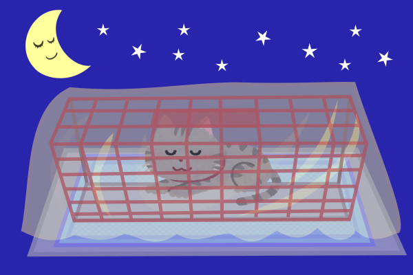
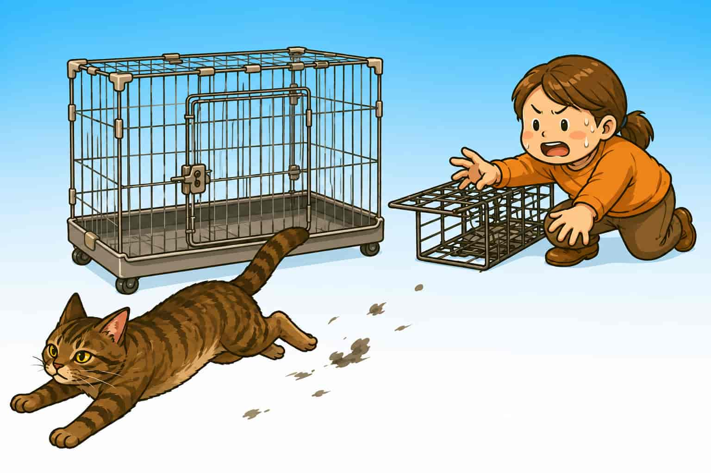
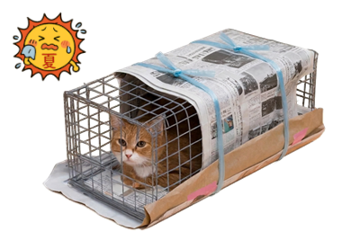
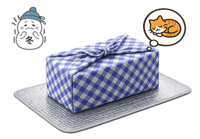
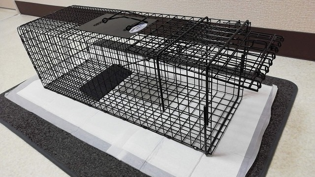
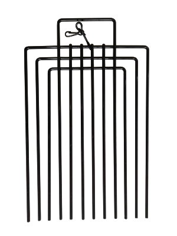
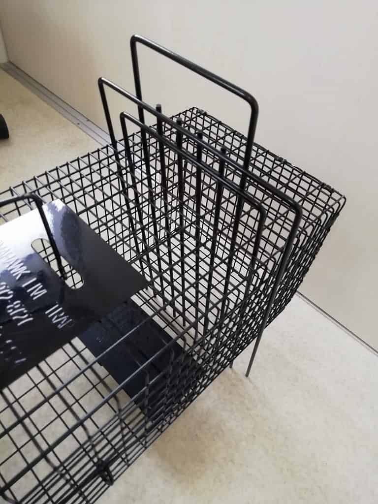
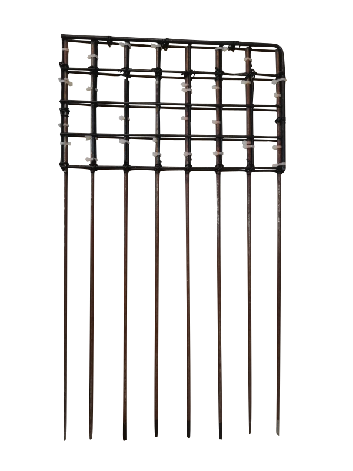
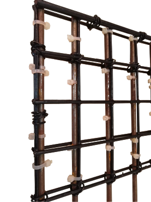

猫を自宅で待機させる場合の注意点

はじめに
触れない猫は、最初に入っている容器から無理に移し替えないこと（脱走・怪我の元）。
管理が最も楽なのは捕獲器（給餌・排泄の処理がしやすいため）。
無理に移し替えようとすると逃げられます！一晩待機なら捕獲器で十分

待機期間
- 手術前日〜当日に捕獲するのが理想
- 保護予定でもないのに、１週間も前からの捕獲は長すぎる
- 特に授乳中の母猫は残された子猫が危険
給水・給餌
- ウェットフードに水またはお湯を足すと食事と水分が１つの皿で済む
- 成猫なら一晩の絶食は問題なし。ただし夏の長期絶水は危険
- 子猫・痩せた猫に長時間の絶食は危険。夜の間も与えておくこと
温度管理
夏
- 日なた放置はNG。車内放置は絶対ダメ（致命的）
- 一晩以上の待機なら必ず水を
冬
- 夜間に屋外で待機させる場合は毛布・段ボール等で防寒を
▶ 関連記事

捕獲した猫の温度管理
捕獲器で待機させる場合
被せ物をする
- 逃げ場のない状態での外からの視線は猫に強いストレス。布・段ボール・新聞紙など何か被せる（夏は通気も確保しながら）
▶ 写真で確認
夏は涼し気に

冬は暖かく

給餌・給水
- 食器は脱走しない程度の隙間から差し入れる（丈の低い皿なら開閉隙間は狭くて済む）
- 容器の回収は無理せず、返還後でOK
排泄物の処理
- おしっこ：下に敷いたペットシーツを交換するだけ
▶ 写真
▼ ペットシーツを捕獲器の下に敷くと汚れたときの交換が楽

- うんち：棒でつついて落とす。猫が怖がるなら無理しない
- 捕獲器内に新聞紙を敷いておくと処理しやすい
- 水で洗い流すのはNG（猫が濡れて凍える）
- 猫砂は散らかるので使わない方が良い
- 消臭スプレーは猫に直接かけない
便利アイテムの紹介
- 捕獲器内を区画分けできるアイテム（ディバイダー）があると給餌・掃除がしやすい
- 「捕獲器 ディバイダー」または「捕獲器 デバイダー」で検索
▶ ディバイダー写真


▶ 自作ディバイダー見本


キャリーケースで待機させる場合
- できるだけ大きいサイズを使う（小さいと給餌も掃除も困難）
- 水はこぼれやすい。置けない場合はウェットフードで水分補給
- 底には新聞紙・ペットシーツ等を敷いておく（脱走の恐れがある場合、無理に交換しようとしないこと）
- 脱走は一瞬。開ける際は必ず締め切った部屋で